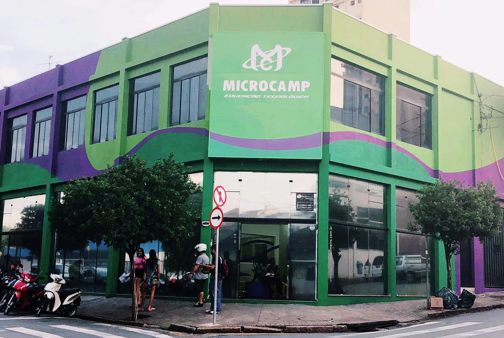

Microcamp
Inovando para conectar Você
Conheça nossa tragetória
A Microcamp é a principal rede de educação tecnológica do Brasil. Desde sua fundação, em 1977, seus esforços têm contribuído, decisivamente, para o aumento da inclusão digital no país, por meio do ensino de informática, tecnologias de vanguarda e inglês.
Em mais de 40 anos de mercado, já foram formados mais de dois milhões de alunos no Brasil e no exterior (Portugal, Espanha e Argentina). Em sua trajetória, a Microcamp sempre buscou conectar inovação às pessoas utilizando uma linguagem leve, simples e criativa.
Por esse motivo, seus cursos– Informática com desenvolvimento de aplicativos e realidade mixada, Hardware e Desenvolvimentode Games com VR, Produtividade com Pacote Office e Inglês com Inteligência Artificial e Holografia – são referências no mercado.
Além dos conhecimentos técnicos de cada curso, os alunos Microcamp desenvolvem competências e habilidades que osmotivam a desenvolver atitude empreendedora para conquistar objetivos pessoais e profissionais.
Conheça nosso cursos
Estrutura e Diferencias
-
Mais de 40 anos de tradição no mercado
-
Materias e metodologias exclusivos
-
Escola reveladora de talentos
-
Preços acessíveis
-
Inovação contínua
-
Melhor aprendizado por meio de aulas práticas e online
-
Escolas bem localizadas e de fácil acesso
-
Em nossas escolas já se formaram mais de 2 milhões de alunoso
Nossa Missão
Promover educação tecnológica em nível avançado, desenvolvendo competências técnicas e comportamentais em nossos alunos para alcançar sucesso pessoal e profissional.
Nosso Valores
- Lealdade
- Resiliência
- Inovação
- Racionalidade
- Integridade
- Cooperação
- Atitude
História da Microcamp
Fundada em 1977 por Eloy Tuffi, a Microcamp é a principal rede de educação tecnológica do país. À época,Eloy Tuffi viu no desafio de popularizar o ensino de informática no país uma excelente oportunidade, pois o acesso a esse conhecimento era bem caro e restrito. Com metodologia e material didático exclusivos, a Microcamp sempre aliou tecnologias de vanguarda ao aprendizado em sala de aula, o que fez a rede de escolas rapidamente espalhar-se pelo Brasil com o curso de informática “Basic”. Atuou também nem Portugal, Espanha e Argentina.
Em 1994, lançou seu sistema de franquia e hoje é referência de investimento no segmento de educação, com avaliação global da ABF (Associação Brasileira de Franchising) de 97,6. Em 2012, inovou novamente ao lançar o curso de Design de Games, tornando-se a primeira instituição de ensino a oferecer esse conhecimento em escala nacional.
Com mais de 40 anos de tradição no mercado e mais de 2 milhões de alunos formados, a Microcamp é a única empresabrasileira que tem seu “core business” focado no ensino de informática e tecnologia. É o que ela sabe fazer de melhor: trazer inovação e disseminar educação tecnológica no país.
Assesoria de Impressa
imprensa@microcamp.com.br - (19) 2116-2500